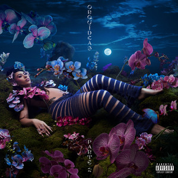

Da click aquí para escuchar su ultimo album!
Artista: Kali Uchis
Álbum: Sin miedo (del amor y otros demonios)
Fecha de lanzamiento: 2020
Géneros: R&B/Soul, Alternativa/Independiente, Pop, Disco
Da click aquí para escucharla: